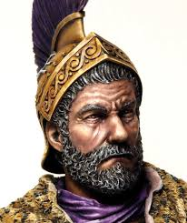

Hannibal Barkas war ein karthagischer Feldherr und eines der größten militärischen Genies der Antike, der vor allem für seinen berühmten Alpenübergang und die daraus folgenden Schlachten im Zweiten Punischen Krieg bekannt ist.
Jugend und Erziehung
Hannibal wurde um 247 v. Chr. in Karthago geboren. Er wuchs in einer militärische Familie auf und wurde von seinem Vater zum Krieg ausgebildet. Sein Vater, Hamilkar Barkas, war ein erfahrener Feldherr, der während des Ersten Punischen Krieges gegen Rom gekämpft hatte.
Schon als kleiner Junge begleitete er seinen Vater im Kriegszug nach Spanien und leistete ihm einen Schwur: Er werde niemals in Freundschaft mit den Römern geraten. Hannibal verpflichtete sich damit, Rom sein ganzes Leben lang zu hassen und zu bekämpfen. Außerdem ist anzunehmen, dass Hannibal eine umfassende Ausbildung erhielt. Er lernte mehrere Sprachen, darunter Punisch und Griechisch, und war mit der Geschichte und Kultur der Mittelmeerregion vertraut.
Der 2. Punische Krieg (218-201 v. Chr.)
Im Jahr 221 v. Chr., nach dem Tod seines Vaters, übernahm der 26-jährige Hannibal den Oberbefehl über die karthagischen Truppen in Spanien. Entschlossen, die Pläne seines Vaters fortzusetzen, machte er sich daran, den 2. Punischen Krieg gegen Rom zu führen – veranlasst durch Rache für die Niederlage im 1. Punischen Krieg.
218 v. Chr. eroberte Hannibal die spanische Stadt Sagunt, die mit Rom verbündet war. Dies führte zur Kriegserklärung Roms und leitete seinen berühmten Alpenübergang ein, vermutlich über den Mont Genevre. Mit etwa 40.000 Soldaten und 37 Kriegselefanten stellte sich Hannibal den extremen Herausforderungen der Alpenüberquerung. Viele seiner Männer und Elefanten überlebten die Strapazen nicht, doch die überlebenden Elefanten beeindruckten die Römer als Kriegsmaschinen.
Nach dem erfolgreichen Übergang rückte Hannibal 217 v. Chr. weiter nach Süden vor. In der Schlacht am Trasimenischen See schlug er ein weiteres römisches Heer. Der Höhepunkt seines Feldzugs folgte am 2. August 216 v. Chr. in der Schlacht bei Cannae. Diese Schlacht gilt als eine der blutigsten der Antike und endete mit einer verheerenden Niederlage für Rom. Während Hannibal nur etwa 5.000 bis 8.000 Soldaten verlor, fielen auf römischer Seite 50.000 bis 70.000 Männer, und weitere 10.000 wurden gefangen genommen.
211 v. Chr. marschierte Hannibal Richtung Rom, was den berühmten Ausruf „Hannibal ante portas!“ („Hannibal vor den Toren“) inspirierte. Allerdings belagerte er die Stadt nicht, sondern plünderte nur die Umgebung, bevor er sich zurückzog, da die Römer ihn nicht direkt angriffen.
207 v. Chr. erlitt Hannibal einen schweren Schlag, als die Römer seinen Bruder Hasdrubal besiegten und dessen Kopf in sein Lager warfen. Daraufhin änderte sich das Blatt endgültig: Der römische General Publius Scipio Africanus führte den Krieg nach Afrika und griff 202 v. Chr. die Stadt Zama an. Hannibal hatte keine andere Wahl als in seine Heimat zurückzukehren, um sie zu verteidigen. Doch in der entscheidenden Schlacht von Zama wurde er von Scipio Africanus besiegt und floh schließlich zu König Prusias nach Bithynien (Kleinasien). Damit war der 2. Punische Krieg beendet.
Ende
Hannibal lebte nach seiner Flucht noch einige Jahre im Exil, bevor er 183 v. Chr. von den Römern gefunden wurde. Er brachte sich selbst mit Gift um, um einer römischen Gefangenschaft zu entgehen.
Nach Hannibals Tod (183 v. Chr) und auch schon nach dem Ende des 2. Punischen Krieges, ergriffen die Römer einige Maßnahmen, um ihre militärische Position zu stärken.
Hier sind einige Beispiele:
- Militärische Verbesserungen:
- Die Römer entwickelten ihre Waffen und Ausrüstung weiter. Zum Beispiel wurde das Gladius-Hispaniensis, ein kurzes Schwert spanischen Ursprungs, nach der Konfrontation mit Hannibal in ihre Armee integriert, da es sich im Nahkampf bewährt hatte.
- Verbesserung der Verteidigung:
- Das römische Straßennetz wurde erweitert, um Truppen schneller an Orte zu verlegen.
- Die Römer bauten Befestigungen in neu eroberten Gebieten und verstärkten die Verteidigung wichtiger Städte, besonders in Italien und den Provinzen.
- Politische Maßnahmen zur Kontrolle Karthagos:
Nach dem Sieg über Karthago im Zweiten Punischen Krieg wurden Karthago strenge Bedingungen auferlegt. Dazu gehörten:
- Ein Verbot, ohne römische Zustimmung Krieg zu führen.
- Hohe Reparationszahlungen.
- Eine Reduzierung ihrer Flotte, wodurch Karthago keine große Bedrohung mehr darstellte.